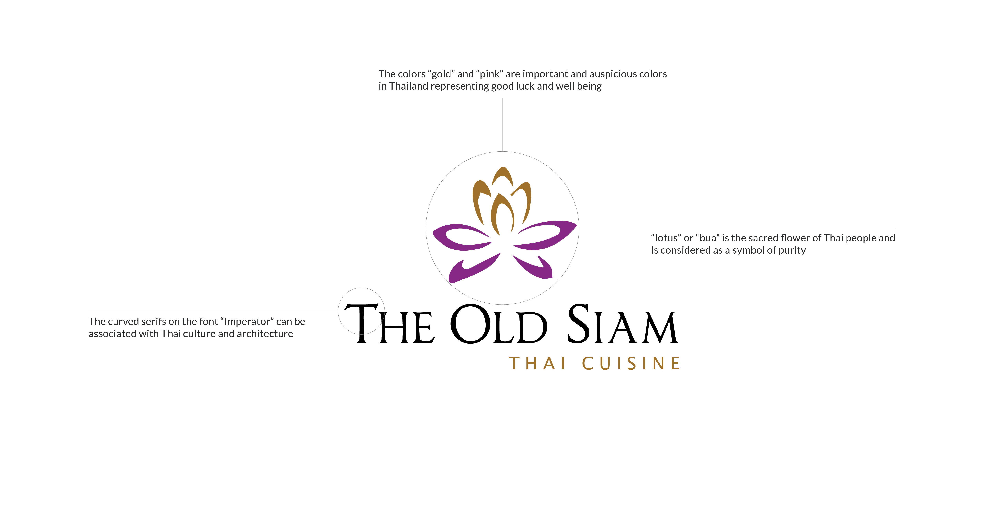
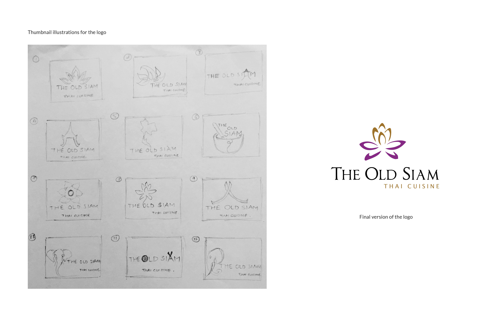
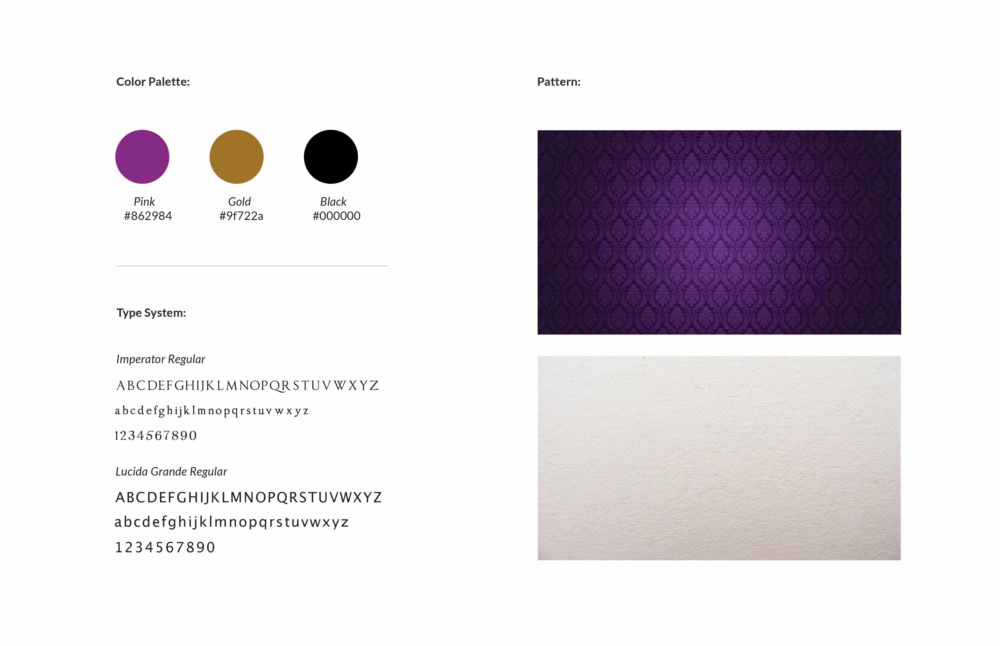
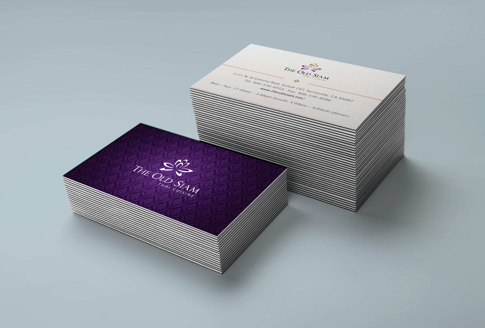
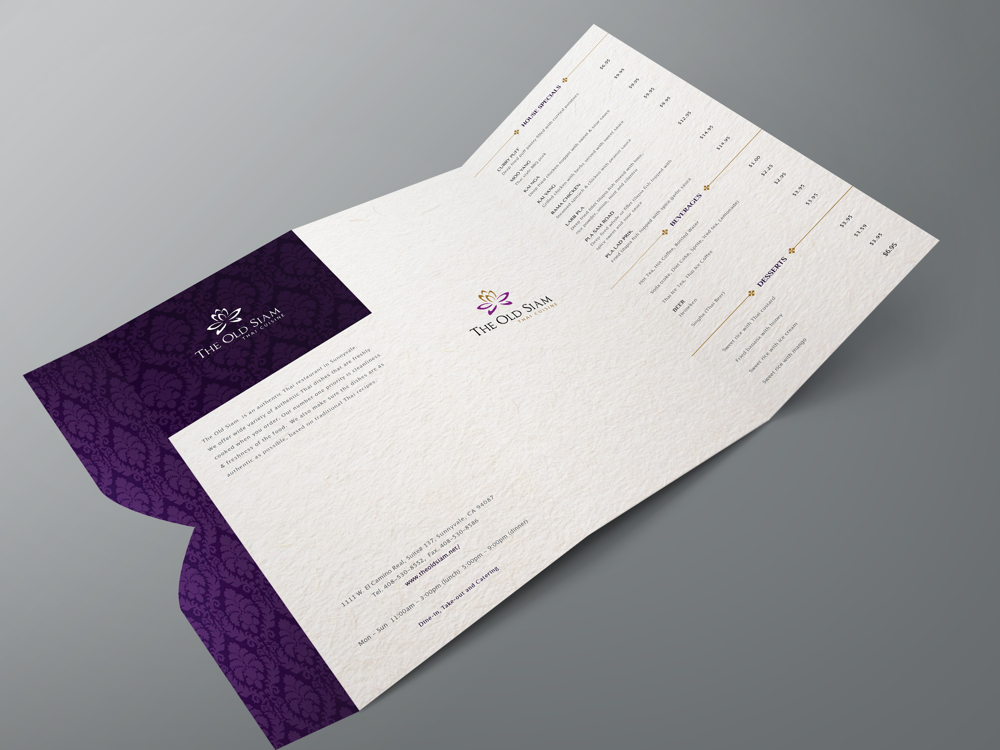
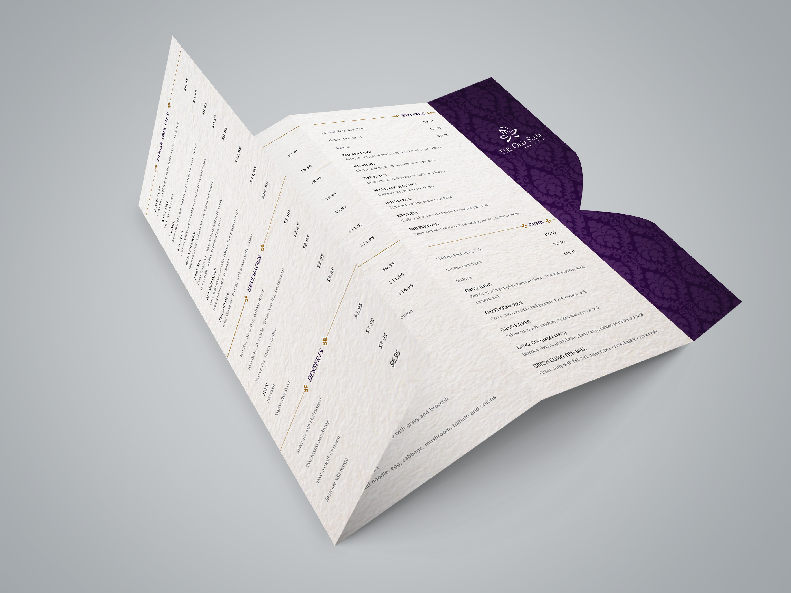
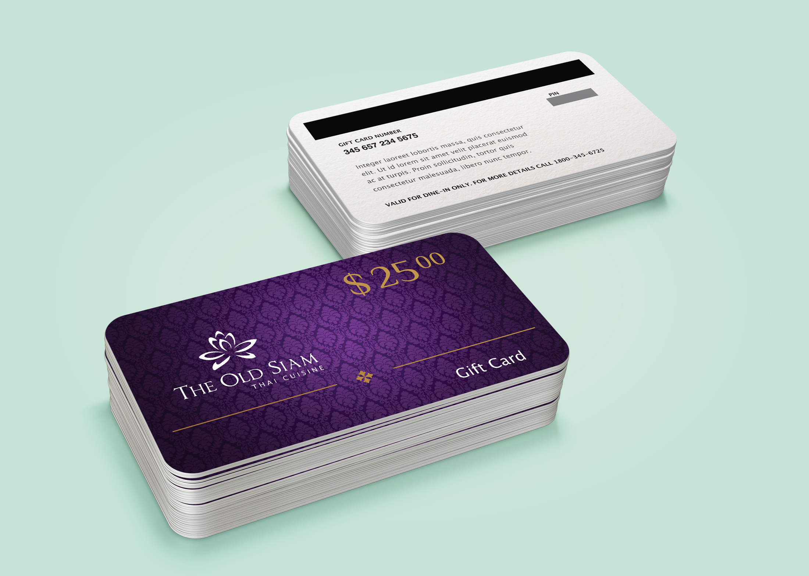
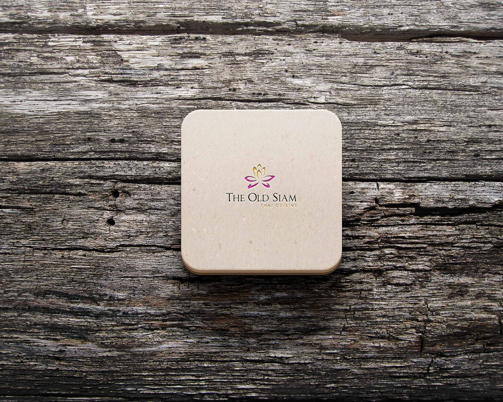
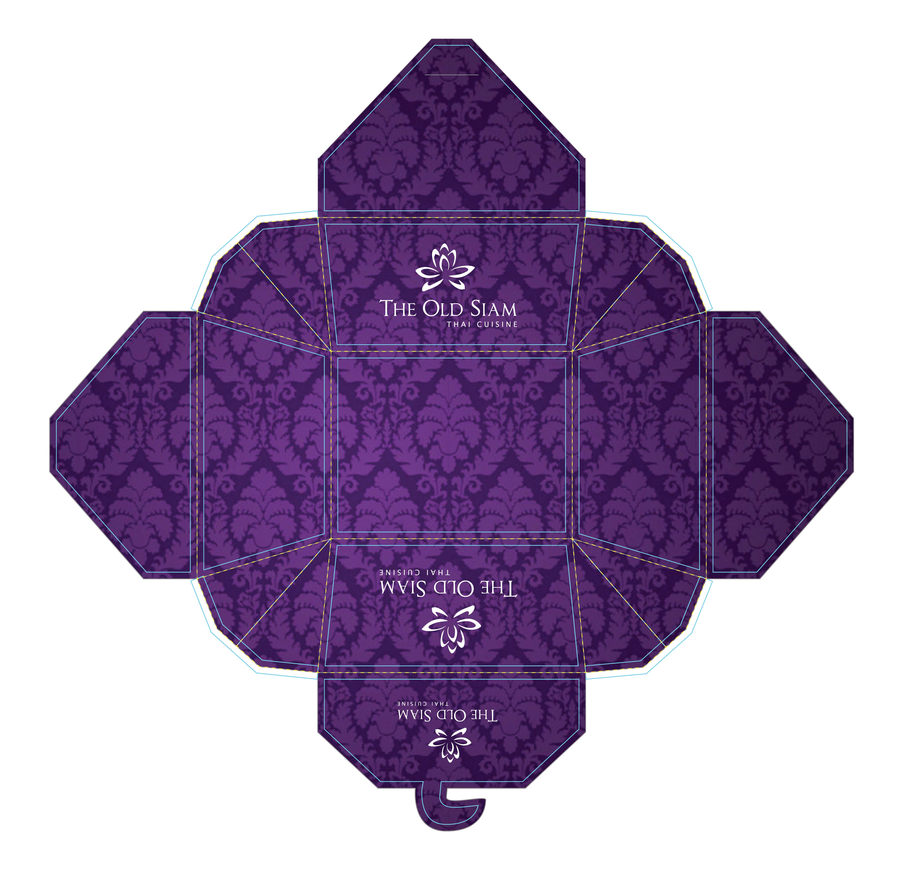
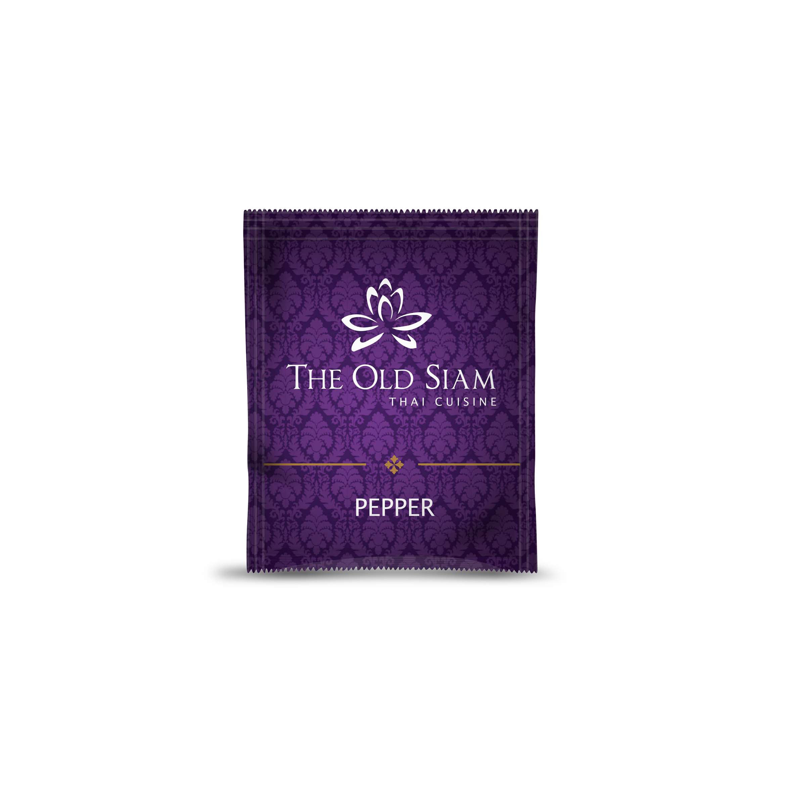

The Old Siam
Goal: To re-brand an existing restaurant by redesigning it’s logo and changing the current perception and design language of the company. The aim was to create
a high-end menu with a unique fold and die cut which would present the client as a high end establishment and give sense
of the kind of food and service they provide. The project also required to incorporate cultural references based on the kind of food served, leading to research about the country values.
Logo



Business cards

Menu back-side

Menu front-side

Gift cards

Coaster

Takeout box

Salt-n-pepper packets
